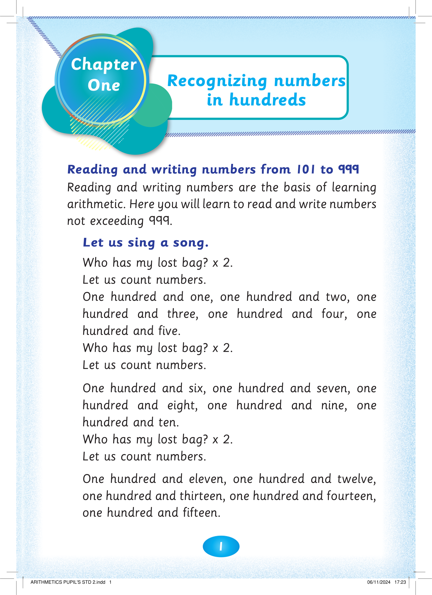

1
Reading and writing numbers from 101 to 999
Reading and writing numbers are the basis of learning arithmetic. Here you will learn to read and write numbers not exceeding 999.
Let us sing a song.
Who has my lost bag? x 2.
Let us count numbers.
One hundred and one, one hundred and two, one hundred and three, one hundred and four, one hundred and five.
Who has my lost bag? x 2.
Let us count numbers.
One hundred and six, one hundred and seven, one hundred and eight, one hundred and nine, one hundred and ten.
Who has my lost bag? x 2.
Let us count numbers.
One hundred and eleven, one hundred and twelve, one hundred and thirteen, one hundred and fourteen, one hundred and fifteen.


Recognizing numbers in hundreds


Chapter
One


ARITHMETICS PUPIL'S STD 2.indd 1
06/11/2024 17:23